Chip Verification
This page provides a brief introduction to chip verification, including concepts used in examples such as DUT (Design Under Test) and RM (Reference Model).
The chip verification process needs to align with the actual situation of the company or team. There is no absolute standard that meets all requirements and must be referenced.
What is Chip Verification?
The chip design-to-production process involves three main stages: chip design, chip manufacturing, and chip packaging/testing. Chip design is further divided into front-end and back-end design. Front-end design, also known as logic design, aims to achieve the desired circuit logic functionality. Back-end design, or physical design, focuses on optimizing layout and routing to reduce chip area, lower power consumption, and increase frequency. Chip verification is a critical step in the chip design process. Its goal is to ensure that the designed chip meets the specified requirements in terms of functionality, performance, and power consumption. The verification process typically includes functional verification, timing verification, and power verification, using methods and tools such as simulation, formal verification, hardware acceleration, and prototyping. For this tutorial, chip verification refers only to the verification of the front-end design to ensure that the circuit logic meets the specified requirements (“Does this proposed design do what is intended?”), commonly known as functional verification. This does not include back-end design aspects like power and frequency.
For chip products, design errors that make it to production can be extremely costly to fix, as it might require recalling products and remanufacturing chips, incurring significant financial and time costs. Here are some classic examples of failures due to inadequate chip verification:
Intel Pentium FDIV Bug：In 1994, Intel’s Pentium processor was found to have a severe division error known as the FDIV bug. This error was due to incorrect entries in a lookup table within the chip’s floating-point unit. Although it rarely affected most applications, it caused incorrect results in specific calculations. Intel had to recall a large number of processors, leading to significant financial losses.
Ariane 5 Rocket Failure：Though not a chip example, this highlights the importance of hardware verification. In 1996, the European Space Agency’s Ariane 5 rocket exploded shortly after launch due to an overflow when converting a 64-bit floating-point number to a 16-bit integer in the navigation system, causing the system to crash. This error went undetected during design and led to the rocket’s failure.
AMD Barcelona Bug：In 2007, AMD’s Barcelona processor had a severe Translation Lookaside Buffer (TLB) error that could cause system crashes or reboots. AMD had to mitigate this by lowering the processor’s frequency and releasing BIOS updates, which negatively impacted their reputation and financial status.
These cases emphasize the importance of chip verification. Errors detected and fixed during the design phase can prevent these costly failures. Insufficient verification continues to cause issues today, such as a new entrant in the ASIC chip market rushing a 55nm chip without proper verification, leading to three failed tape-outs and approximately $500,000 in losses per failure.
Chip Verification Process

The coupling relationship between chip design and verification is shown in the diagram above. Both design and verification have the same input: the specification document. Based on this document, both design and verification teams independently code according to their understanding and requirements. The design team needs to ensure that the RTL code is “synthesizable,” considering circuit characteristics, while the verification team mainly focuses on whether the functionality meets the requirements, with fewer coding constraints. After both teams complete module development, a sanity test is conducted to check if the functionality matches. If there are discrepancies, collaborative debugging is done to identify and fix issues before retesting. Due to the high coupling between chip design and verification, some companies directly couple their design and verification teams, assigning verification teams to each design submodule. The coupling process in the diagram is coarse-grained, with specific chips (e.g., SoC, DDR) and companies having their cooperation models.
In the above comparison test, the module produced by the design team is usually called DUT (Design Under Test), while the model developed by the verification team is called RM (Reference Model). The verification process includes: writing a verification plan, creating a verification platform, organizing functional points, constructing test cases, running and debugging, collecting bugs/coverage, regression testing, and writing test reports.
Verification Plan： The verification plan describes how verification will be carried out and how verification quality will be ensured to meet functional verification requirements. It typically includes verification goals, strategies, environment, items, process, risk mitigation, resources, schedule, results, and reports. Verification goals specify the functions or performance metrics to be verified, directly extracted from the chip specification. Verification strategy outlines the methods to be used, such as simulation, formal verification, FPGA acceleration, etc., and how to organize the verification tasks. The verification environment details the specific testing environment, including verification tools and versions. The verification item library lists specific items to be verified and expected results. Verification plans can be general or specific to sub-tasks.
Platform Setup： The verification platform is the execution environment for specific verification tasks. Similar verification tasks can use the same platform. Setting up the platform is a key step, including choosing verification tools (e.g., software simulation, formal verification, hardware acceleration), configuring the environment (e.g., server, FPGA), creating the test environment, and basic test cases. Initial basic test cases are often called “smoke tests.” Subsequent test codes are based on this platform, so it must be reusable. The platform includes the test framework, the code being tested, and basic signal stimuli.
Organizing Functional Points： This involves listing the DUT’s basic functions based on the specification manual and detailing how to test each function. Functional points are prioritized based on importance, risk, and complexity. They also need to be tracked for status, with updates synchronized to the plan if changes occur.
Test Cases These are conditions or variables used to determine if the DUT meets specific requirements and operates correctly. Each case includes test conditions, input data, expected results, actual results, and test outcomes. Running test cases and comparing expected vs. actual results help verify the system or application’s correct implementation of functions or requirements. Test cases are crucial tools for verifying chip design against specifications.
Coding Implementation： This is the execution of test cases, including generating test data, selecting the test framework, programming language, and writing the reference model. This phase requires a deep understanding of functional points and test cases. Misunderstandings can lead to the DUT being undrivable or undetected bugs.
Collecting Bugs/Coverage： The goal of verification is to find design bugs early, so collected bugs need unique identifiers, severity ratings, and status tracking with design engineers. Discovering bugs is ideal, but since not every test finds bugs, coverage is another metric to evaluate verification thoroughness. Sufficient verification is indicated when coverage (e.g., code coverage >90%) exceeds a threshold.
Regression Testing： As verification and design are iterative, regression tests ensure the modified DUT still functions correctly after bug fixes. This catches new errors or reactivates old ones due to changes. Regression tests can be comprehensive or selective, covering all functions or specific parts.
Test Report： This summarizes the entire verification process, providing a comprehensive view of the testing activities, including objectives, executed test cases, discovered issues, coverage, and efficiency.
Levels of Chip Verification
Chip verification typically includes four levels based on the object size: UT, BT, IT, and ST.
Unit Testing（UT）： The lowest verification level, focusing on single modules or components to ensure their functionality is correct.
Block Testing (BT) ： Modules often have tight coupling, making isolated UT testing complex. BT merges several coupled modules into one DUT block for testing.
Integration Testing (IT) ： Builds on UT by combining multiple modules or components to verify their collaborative functionality, usually testing subsystem functionality.
System Testing (ST) ： Also called Top verification, ST combines all modules or components into a complete system to verify overall functionality and performance requirements.
In theory, these levels follow a bottom-up order, each building on the previous level. However, practical verification activities depend on the scale, expertise, and functional needs of the enterprise, so not all levels are always involved. At each level, relevant test cases are written, tests run, and results analyzed to ensure the chip design’s correctness and quality.
Chip Verification Metrics
Verification metrics typically include functional correctness, test coverage, defect density, verification efficiency, and verification cost. Functional correctness is the fundamental metric, ensuring the chip executes its designed functions correctly. This is validated through functional test cases, including normal and robustness tests. Test coverage indicates the extent to which test cases cover design functionality, with higher coverage implying higher verification quality. Coverage can be further divided into code coverage, functional coverage, condition coverage, etc. Defect density measures the number of defects found in a given design scale or code volume, with lower density indicating higher design quality. Verification efficiency measures the amount of verification work completed within a given time and resource frame, with higher efficiency indicating higher productivity. Verification cost encompasses all resources required for verification, including manpower, equipment, and time, with lower costs indicating higher cost-effectiveness.
Functional correctness is the absolute benchmark for verification. However, in practice, it is often impossible to determine if the test plan is comprehensive and if all test spaces have been adequately covered. Therefore, a quantifiable metric is needed to guide whether verification is sufficient and when it can be concluded. This metric is commonly referred to as “test coverage.” Test coverage typically includes code coverage (lines, functions, branches) and functional coverage.
Code Line Coverage： This indicates how many lines of the DUT design code were executed during testing.
Function Coverage： This indicates how many functions of the DUT design code were executed during testing.
Branch Coverage： This indicates how many branches (if-else) of the DUT design code were executed during testing.
Functional Coverage： This indicates how many predefined functions were triggered during testing.
High code coverage can improve the quality and reliability of verification but does not guarantee complete correctness since it cannot cover all input and state combinations. Therefore, in addition to pursuing high code coverage, other testing methods and metrics, such as functional testing, performance testing, and defect density, should be combined.
Chip Verification Management
Chip verification management is a comprehensive process that encompasses all activities in the chip verification process, including the development of verification strategies, the setup of the verification environment, the writing and execution of test cases, the collection and analysis of results, and the tracking and resolution of issues and defects. The goal of chip verification management is to ensure that the chip design meets all functional and performance requirements, as well as specifications and standards.
In chip verification management, the first step is to formulate a detailed verification strategy, including objectives, scope, methods, and schedules. Then, a suitable verification environment must be set up, including hardware, software tools, and test data. Next, a series of test cases covering all functional and performance points must be written and executed, with results collected and analyzed to identify problems and defects. Finally, these issues and defects need to be tracked and fixed until all test cases pass.
Chip verification management is a complex process requiring a variety of skills and knowledge, including chip design, testing methods, and project management. It requires close collaboration with other activities, such as chip design, production, and sales, to ensure the quality and performance of the chip. The effectiveness of chip verification management directly impacts the success of the chip and the company’s competitiveness. Therefore, chip verification management is a crucial part of the chip development process.
The chip verification management process can be based on a “project management platform” and a “bug management platform,” with platform-based management typically being significantly more efficient than manual management.
Current State of Chip Verification
Currently, chip verification is typically completed within chip design companies. This process is not only technically complex but also entails significant costs. Given the close relationship between acceptance and design, chip verification inevitably involves the source code of the chip design. However, chip design companies usually consider the source code as a trade secret, necessitating internal personnel to perform the verification, making outsourcing difficult.
The importance of chip verification lies in ensuring that the designed chip operates reliably under various conditions. Verification is not only for meeting technical specifications but also for addressing the growing complexity and emerging technology demands. As the semiconductor industry evolves, the workload of chip verification has been continuously increasing, especially for complex chips, where verification work has exceeded design work, accounting for more than 70%. This means that in terms of engineer personnel ratio, verification engineers are usually twice the number of design engineers (e.g., in a team of three thousand at Zeku, there are about one thousand design engineers and two thousand verification engineers. Similar or higher ratios apply to other large chip design companies).
Due to the specificity of verification work, which requires access to the chip design source code, it significantly limits the possibility of outsourcing chip verification. The source code is considered the company’s core trade secret, involving technical details and innovations, thus making it legally and securely unfeasible to share with external parties. Consequently, internal personnel must shoulder the verification work, increasing the internal workload and costs.
Given the current situation, the demand for chip verification engineers continues to grow. They need a solid technical background, familiarity with various verification tools and methods, and keen insight into emerging technologies. Due to the complexity of verification work, verification teams typically need a large scale, contrasting sharply with the design team size.
To meet this challenge, the industry may need to continuously explore innovative verification methods and tools to improve efficiency and reduce costs.
Summary: Complex Chip Verification Costs
High Verification Workload： For complex chips, verification work accounts for over 70% of the entire chip design work.
High Labor Costs： The number of verification engineers is twice that of design engineers, with complex tasks requiring thousands of engineers.
Internal Verification： To ensure trade secrets (chip design code) are not leaked, chip design companies can only hire a large number of verification engineers to perform verification work internally.
Crowdsourcing Chip Verification
In contrast to hardware, the software field has already made testing outsourcing (subcontracting) a norm to reduce testing costs. This business is highly mature, with a market size in the billions of yuan, advancing towards the trillion-yuan scale. From the content perspective, software testing and hardware verification share significant similarities (different targets with the same system objective). Is it feasible to subcontract hardware verification in the same way as software?
Crowdsourcing chip verification faces many challenges, such as:
Small Number of Practitioners： Compared to the software field, the number of hardware developers is several orders of magnitude smaller. For instance, according to GitHub statistics (https://madnight.github.io/githut/#/pull_requests/2023/2), traditional software programming languages (Python, Java, C++, Go) account for nearly 50%, whereas hardware description languages like Verilog account for only 0.076%, reflecting the disparity in developer numbers.
Commercial Verification Tools： The verification tools used in enterprises (simulators, formal verification, data analysis) are almost all commercial tools, which are nearly invisible to ordinary people and difficult to self-learn.
Lack of Open Learning Materials： Chip verification involves accessing the chip design source code, which is typically regarded as the company’s trade secrets and proprietary technology. Chip design companies may be unwilling to disclose detailed verification processes and techniques, limiting the availability of learning materials.
Feasibility Analysis
Although the chip verification field has been relatively closed, from a technical perspective, adopting a subcontracting approach for verification is a feasible option due to several factors:
Firstly, with the gradual increase of open-source chip projects, the source code involved in verification has become more open and transparent. These open-source projects do not have concerns about trade secrets in their design and verification process, providing more possibilities for learning and research. Even if some projects involve trade secrets, encryption and other methods can be used to hide design codes, addressing trade secret issues to a certain extent and making verification easier to achieve.
Secondly, many fundamental verification tools have emerged in the chip verification field, such as Verilator and SystemC. These tools provide robust support for verification engineers, helping them perform verification work more efficiently. These tools alleviate some of the complexity and difficulty of the verification process, providing a more feasible technical foundation for adopting subcontracted verification methods.
In the open-source software field, some successful cases can be referenced. For example, the Linux kernel verification process adopts a subcontracting approach, with different developers and teams responsible for verifying different modules, ultimately forming a complete system. Similarly, in the machine learning field, the ImageNet project adopted a crowdsourced annotation strategy, completing large-scale image annotation tasks through crowdsourcing. These cases provide successful experiences for the chip verification field, proving the potential of subcontracted verification to improve efficiency and reduce costs.
Therefore, despite the chip verification field being relatively closed compared to other technical fields, technological advances and the increase of open-source projects offer new possibilities for adopting subcontracted verification. By drawing on successful experiences from other fields and utilizing existing verification tools, we can promote the application of more open and efficient verification methods in chip verification, further advancing the industry. This openness and flexibility in technology will provide more choices for verification engineers, promoting innovative and diverse development in the chip verification field.
Technical Route
To overcome challenges and engage more people in chip verification, this project continuously attempts the following technical directions:
Provide Multi-language Verification Tools： Traditional chip verification is based on the System Verilog programming language, which has a small user base. To allow other software development/testing professionals to participate in chip verification, this project provides multi-language verification conversion tools Picker, enabling verifiers to use familiar programming languages (e.g., C++, Python, Java, Go) with open-source verification tools.
Provide Verification Learning Materials： The scarcity of chip verification learning materials is mainly due to the improbability of commercial companies disclosing internal data. Therefore, this project will continuously update learning materials, allowing verifiers to learn the necessary skills online for free.
Provide Real Chip Verification Cases： To make the learning materials more practical, this project uses the “Xiangshan Kunming Lake (an industrial-grade high-performance RISC-V processor) IP core” as a basis, continuously updating verification cases by extracting modules from it.
Organize Chip Design Subcontracted Verification： Applying what is learned is the goal of every learner. Therefore, this project periodically organizes subcontracted chip design verification, allowing everyone (whether you are a university student, verification expert, software developer, tester, or high school student) to participate in real chip design work.
The goal of this project is to achieve the following vision: “Open the black box of traditional verification modes, allowing anyone interested to participate in chip verification anytime, anywhere, using their preferred programming language.”